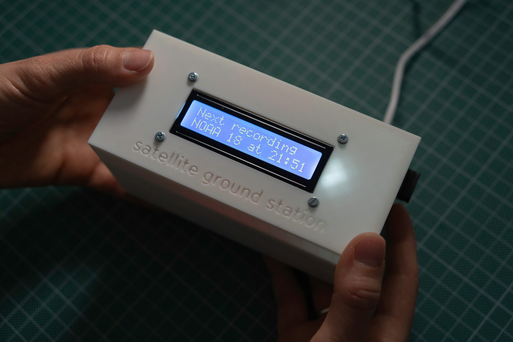
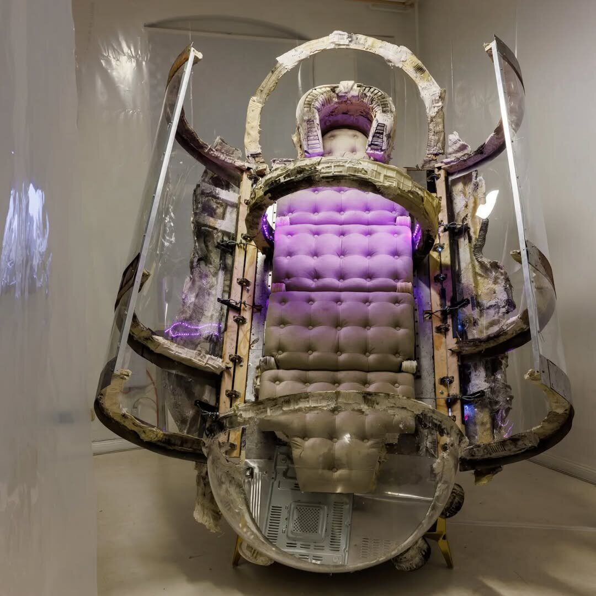
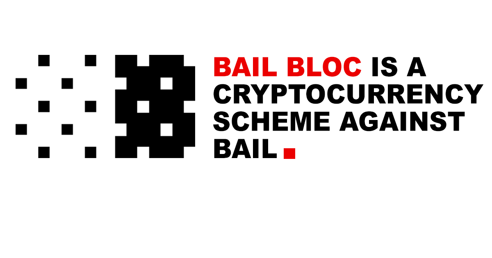

open-weather Automatic Ground Station
The open-weather Automatic Ground Station (AGS) is an open-source Raspberry Pi-based radio receiver that automatically captures satellite imagery from NOAA weather satellites.
Read more
KitchenSync
KitchenSync is a plug-and-play synchronized video playback and automation system built on affordable Raspberry Pi hardware.
Read more
MedBed
MedBed is an interactive sculpture inspired by the conspiracy myth of a medical device that can heal all illnesses and extend life.
Read more
Bail Bloc
Bail Bloc was a desktop application that bailed people out of jail by mining cryptocurrency, operating as a distributed crypto mining operation.
Read more
All City Express (A.C.E.)
An interactive art installation at the Panorama music festival in New York City paying homage to graffiti art's NYC roots.
Read more